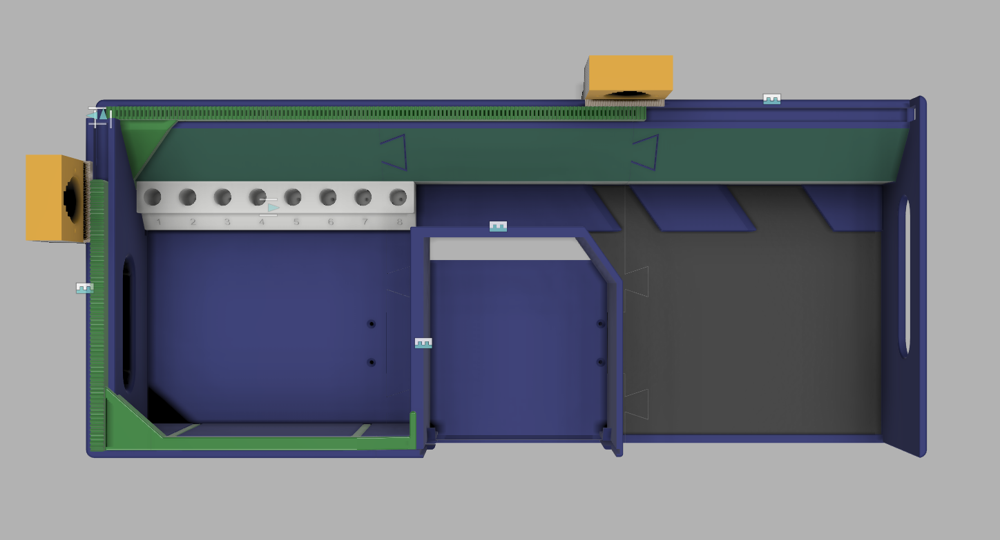
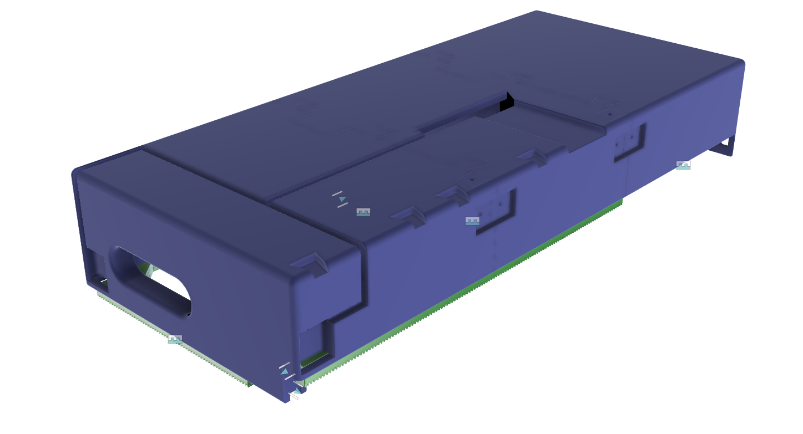
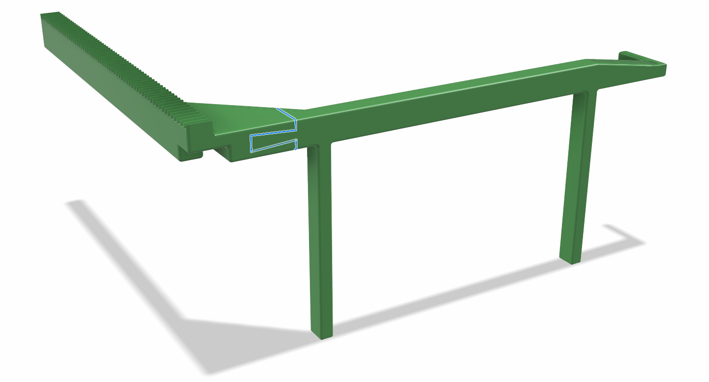
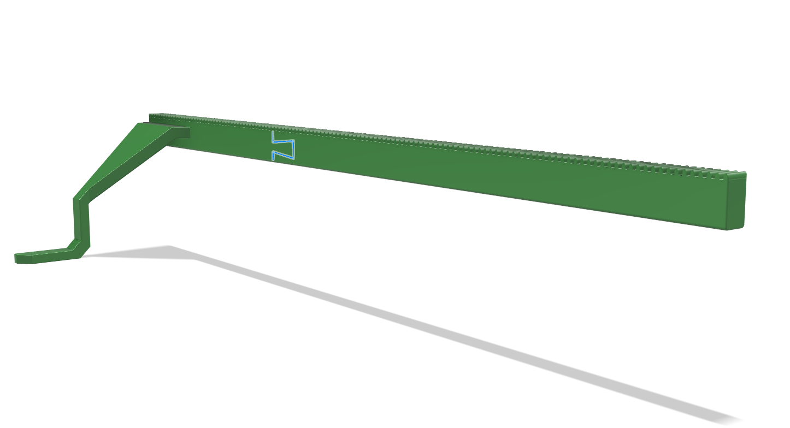
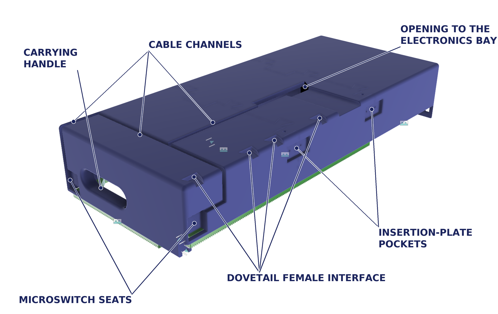
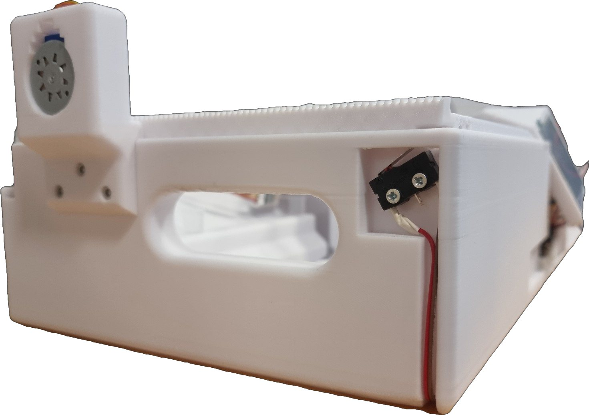
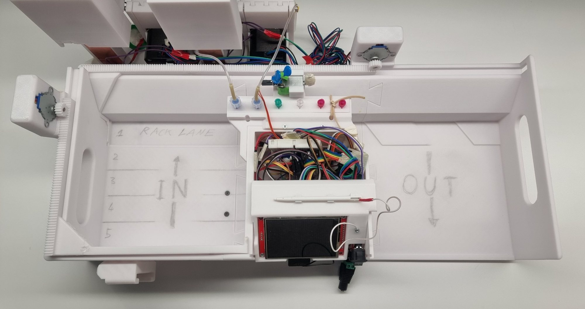

Two-axis chassis: an input queue, a dispensing lane and an output tray
V2 and V2.1 proved that one eight-tube rack can be indexed under the nozzle and can find its own zero. V3 is the version that runs a batch: a second, transverse axis feeds racks from an input queue into the lane, axis 1 indexes them in 22 mm steps, and a motorless cam ejects each finished rack into an output tray. The chassis it needed to do that became the structural foundation of the whole instrument.

What changed from V2.1
An unattended diagnostic protocol needs the machine to work through several racks with nobody swapping them. V3 therefore adds a second axis and two queuing trays either side of the dispensing lane, and the module grows into a platform roughly 500 mm long that sets the physical envelope of the instrument (thesis 7.4). The workflow is a U-shaped path:
- Load. Racks go into the input queue on the left, up to four of them, with a fifth pre-loaded on the lane.
- Feed. Axis 2 advances the queue and transfers the leading rack into the dispensing lane at the start of each cycle.
- Index. Axis 1 moves the rack left to right under the nozzle window in 22 mm steps until every tube has passed beneath it.
- Eject. One more 22 mm stroke at the right end drives the passive cam, which slides the finished rack diagonally into the output tray.


| V2.1 | V3 | Thesis | |
|---|---|---|---|
| Axes | One, longitudinal | Two: axis 1 longitudinal indexing, axis 2 transverse queue feed | 7.4.1 |
| Stroke, axis 1 | ~140 mm, six index moves, short of the 154 mm the eight-position pattern needs. The only unmet criterion of V2.1 | 309 mm active: full eight-position indexing plus the ejection stroke | 7.3.3, 7.4.1 |
| Racks per run | One, placed by hand | Five, four queued and one on the lane: 40 tubes | 7.4.1 |
| Rack hand-off | Manual | Axis 2 feeds in; a motorless fishbone cam ejects out | 7.4.1, 7.4.2 |
| Chassis | One printed rail and carriage | Three dovetail-keyed printed sections, about 500 mm, with the electronics bay between the trays | 7.4.3 |
| Homing | One microswitch, three-pass sequence | The same switch, the same normally-closed fail-safe loop and the same sequence, on each axis | 7.4.1 |
| Drive | 28BYJ-48 through a pinion of 12.80 mm pitch diameter | The same motor on both axes, 16-tooth spur pinion, printed involute gear rack | 7.4.1 |
| Role | Bench stage | Structural foundation: dovetail sockets for the pump and storage modules, a boss for the nozzle holder, a ridge that locates the display holder | 7.4.4 |
What did not change: the endstop wiring and the three-pass homing are the V2.1 ones, and the control path behind the port expander was laid out for two axes from the start. V3 is a mechanical scale-up around a validated drive, not a new drive.
This is the V2 stage moving, not V3. No clip of the two-axis chassis in motion exists. The clip shows the single-axis indexing that axis 1 of V3 extends: same motor, same rack-and-pinion drive above the sample plane, same 22 mm index step. Plays only while in view.
The two axes

Both axes use identical drive components: a 28BYJ-48 geared stepper, a 16-tooth spur pinion and a 3D-printed involute gear rack. Only the pushers differ, to match what each one has to push (thesis 7.4.1).
| Axis 1 | Axis 2 | |
|---|---|---|
| Direction | Longitudinal, along the dispensing lane | Transverse, through the input tray |
| Job | Index the active rack under the nozzles in 22 mm steps, then drive the ejection stroke | Advance the whole queue of waiting racks and hand the leading one into the lane |
| Pusher | Extends downward from an overhead gear rack along the rear wall to contact the back face of the active rack | Spans the full width of the input tray on two parallel legs, so the entire queue moves at once |
| Stroke | 309 mm active | not stated in the thesis |
| Endstop | Own microswitch, normally-closed fail-safe loop, three-pass homing | Same |
| Motor mount | Standalone bracket, aligned against the assembled rack in situ | Same |


Blue highlights in both renders mark the split dovetail joints: each pusher was printed in two parts and thermally welded, because neither fits a desktop printer in one piece (thesis 7.4.3).
Precision moved from CAD to the bench
Two decisions took alignment out of tolerance modelling and put it on the bench (thesis 7.4.3). The motor mounts are independent brackets rather than chassis features, so each motor is positioned against the assembled gear rack in situ for correct mesh and minimal backlash. The microswitch seats are flat locating pads with no pilot holes; the screw holes are drilled at final calibration.
The height of every side wall is set by the tallest moving obstacle: a rack carrying open tubes with their caps standing (thesis 7.4.1). That envelope is exactly what the lid-fouling failure mode in the validation section escapes from.
The fishbone ejector
When a rack finishes its pass at the right end of the lane it has to be cleared sideways into the output tray to make room for the next one. Three constraints governed the mechanism (thesis 7.4.2):
- No auxiliary actuator. Ejection had to be powered by the existing travel of axis 1, to keep the parts count and the controller outputs down.
- Zero stored elastic energy. A spring-loaded kicker releases at an uncontrolled speed above open sample tubes: liquid agitation and aerosol risk.
- Cleanability. No pivots, hinges or slide bushings, which are particulate traps and fluid ingress paths.

The answer is a passive fishbone cam track. Two angled ribs protrude from the underside of every rack, and two matching angled grooves are recessed into the rail floor at the ejection station. When the rack completes position 8 the ribs line up with the grooves; one more 22 mm stroke of axis 1 forces the ribs along the groove walls and turns longitudinal pusher travel into a smooth diagonal slide that puts the rack in the output tray, which sits 1 mm below the main lane. The geometry is moulded into the structural floor and the rack body: no moving parts, no springs, no pivots.
The ribs are elongated, not cylindrical, giving line contact along the groove wall; that constrains yaw so the rack cannot cock or bind in the lane. And the two ribs have asymmetric widths: the wider trailing rib bridges the narrower leading groove instead of dropping into it, so the rack cannot start ejecting during an intermediate dispensing step.
Completed racks accumulate passively. Each newly ejected rack pushes the earlier ones forward across the low-friction floor and squares the batch against the outer corner wall for retrieval at the end of the run. Active alternatives, pivoting push-arms, motorised cross-shuttles and spring-loaded flippers, were rejected at concept screening (thesis Appendix L).
Chassis manufacture

| Aspect | As built |
|---|---|
| One body, three sections | The 500 mm chassis was modelled as a single CAD body and split into three sections to fit a desktop printer. Three rather than two so that a change to one groove or wall reprints one third. The two parting planes coincide with the outer walls of the electronics bay and cross a plain baseline with no grooves, dispensing windows or retaining sills |
| Joining | Interlocking dovetail keys align the sections; M3 screws driven from the rear and bottom faces clamp them; flat reinforcement plates bridge each seam, one at the front and two at the rear, against bending |
| Underside | Recessed wiring ducts to a central port in the electronics bay; pockets for the two homing microswitches; two carrying handles recessed into the outer end walls for two-handed transport; a row of downward-opening dovetail sockets along the rear exterior wall that takes the pump and reagent storage modules from above without external fasteners (7.4.4) |
| Print time | About 8 hours per section, which limited the prototyping cycle to two full-scale build iterations. Both pushers were printed in two parts and joined at dovetail interfaces by localised thermal welding |


On the machine
As the largest structural component, the chassis is the mechanical foundation of the assembled instrument (thesis 7.4.4, 11.6). Input queue left, output tray right; the two pump and storage carriers slide into the dovetail sockets along the rear wall; the stationary nozzle holder mounts to a reinforced boss on the rear wall above the electronics bay, which gives it a stiff fixing point that does not shift relative to the rail and clear height over the tubes; the touchscreen stands at centre front on the bay, located by a ridge on its left wall; the battery sits at front left.
| Quantity | Value | Note |
|---|---|---|
| Assembled instrument | 50 cm wide · 35 cm deep · 18 cm high | The battery adds 5.5 cm to the depth; the height is set by the storage modules (11.6) |
| Mass | ~4 kg, estimated | not weighed, with four racks loaded (11.6) |
| Batch | 5 racks, 40 tubes | Rack count and tubes per rack are set on the touchscreen (7.4.1) |
| Electronics bay | Between the trays | Microcontroller, motor driver boards and power distribution, on solderless breadboards behind a removable front panel (7.4.1, 11.6) |
| Carrying | Two handles | Recessed into the outer end walls of the chassis (11.6) |
A run, start to finish
The operator loads racks into the input queue, selects one or more recipes on the touchscreen and assigns them to tube positions. A pre-run routine checks reagent levels against the batch and refuses to start if a line is short. The axes home if not already referenced. Axis 2 draws the first rack onto the lane; axis 1 indexes each tube under the nozzles, where the pump delivers the volume and a vibration burst detaches the pendant droplet. The finished rack is ejected to the output tray and the next one drawn in (thesis 11.6).
Validation
The validation that concerns this module is in the thesis, chapter 12 sections 12.3 and 12.4, with the lid failure mode also recorded in 7.4.1. Numbers below are those; nothing is added.


| Check | Result | Thesis |
|---|---|---|
| Full batch, unattended | Done: five racks, 40 tubes, two-reagent recipe (100 µL and 75 µL), start to finish with no operator help, on the bench DC supply | 12.3, 12.4 |
| Placement | All 40 tubes hit within the 5 mm landing tolerance | 12.3 |
| Off-target | Three droplets showed partial wetting on the rack deck or lane. No dye reached the bench or the operator | 12.3, 12.5 |
| Volume across racks | Tubes lifted from the first and the last rack held visually comparable volumes | 12.3 |
| Axis speed | Both linear axes were slowed so the steppers had the strength to push the loaded five-rack magazine without stalling; a small delay per cycle | 12.4 |
| Battery run | The 12 V tool battery carried two full racks (16 samples); then, as it drained, running both pumps at once stalled them and the run stopped, because the firmware cannot run one pump at a time. A power limit, not an alignment failure | 12.4 |
| Qualification on the two-axis chassis | The multi-pass bench protocol was repeated on the assembled chassis under integrated firmware; both axes gave reliable queue feeding, precise indexing and automated ejection across repeated full batch sequences. No numeric V3 results are published; the figures on record remain the V2.1 bench numbers of 31 July 2026 | 7.4.1, 7.3.3, App. L |
| Lids left flat | Known failure mode, observed on the assembled instrument. See below | 7.4.1, 12.3 |
The one known failure mode: a lid that rubs the wall

The side walls were drawn around a cap left standing. A lid pushed all the way flat projects sideways instead of upward and reaches the chamfered wall alongside the lane. Contact there loads the rack with a friction the drive cannot detect: the motor completes its commanded steps, the rack lags behind them, and the stage holds a position the firmware believes it has reached. Dispensing into a rack that has fallen short puts the dose beside the tube rather than in it (thesis 7.4.1, 12.3).
The bench repeatability figure of the single-axis stage, no worse than about 0.03 mm, bounds the drive and not the rack: it holds only when external friction is absent (thesis 7.3.3).
Present operating instruction: fold every cap to 135°, avoid lateral cap overlap, and keep rack clearance. A production version would open the caps automatically and remove the manual handling the prototype depends on (12.3).
Open gaps
Record and sources
This page is written from the V3 part of the module's design-side record. The V2 and V2.1 page stays where it was and is untouched; this page is the continuation.
| What | Where |
|---|---|
| The V3 record in full | PROTOTYPE.md, sections 13 to 22, alongside the V2 and V2.1 sections |
| Concept, axes, queuing, capacity, lid fouling | Thesis chapter 7, section 7.4.1 |
| Fishbone ejector | Thesis 7.4.2 |
| Three-section chassis, brackets, switch seats, markings | Thesis 7.4.3 |
| Dovetail sockets, nozzle boss | Thesis 7.4.4 |
| The integrated prototype, envelope, run sequence | Thesis 11.6 |
| 40-tube run, placement, lid failure mode; unattended run, slowed axes, battery run | Thesis 12.3 and 12.4 |
| Bench qualification table, the V2.1 figures V3 inherits | Thesis Appendix L, bench qualification of the indexing stage |